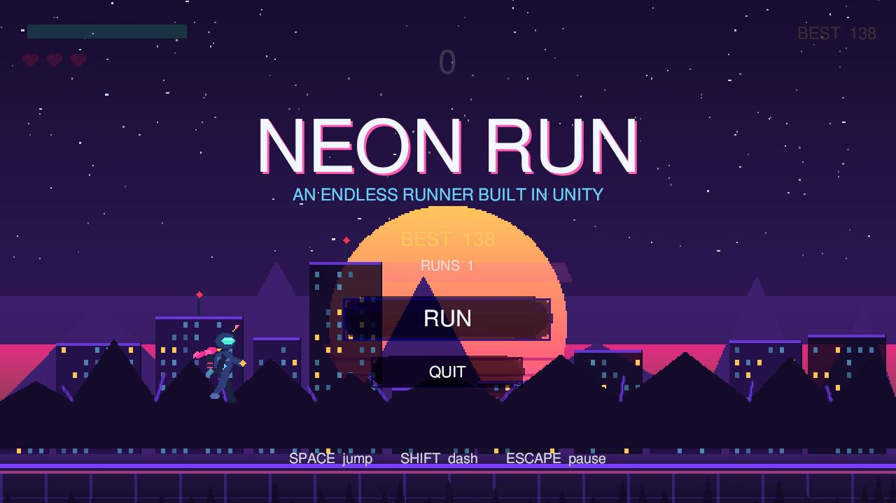
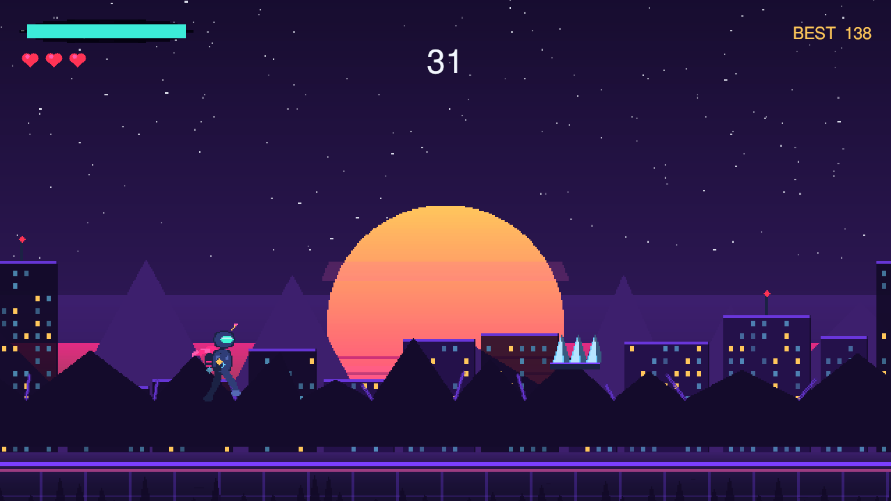
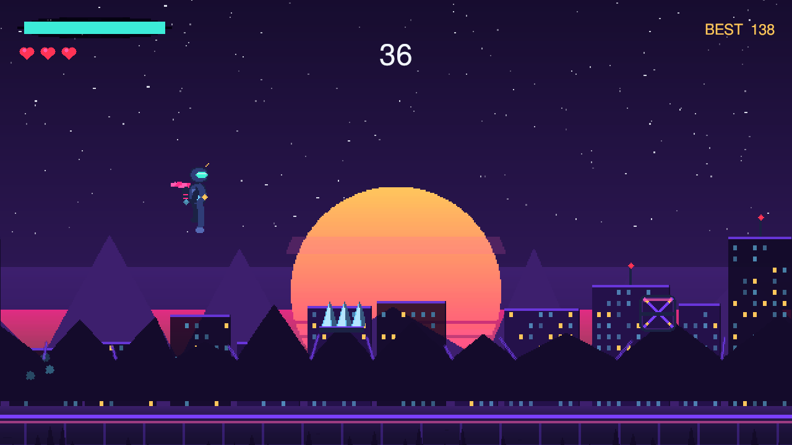
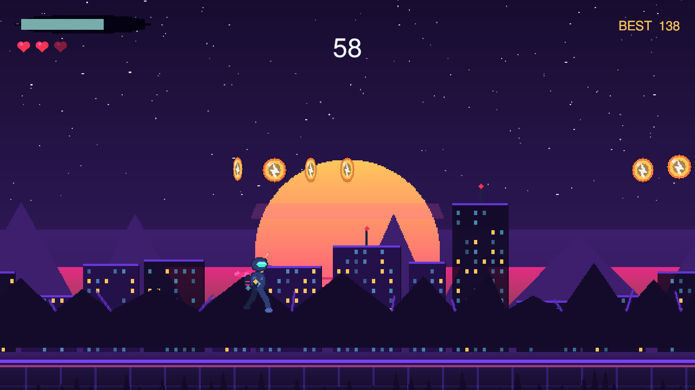
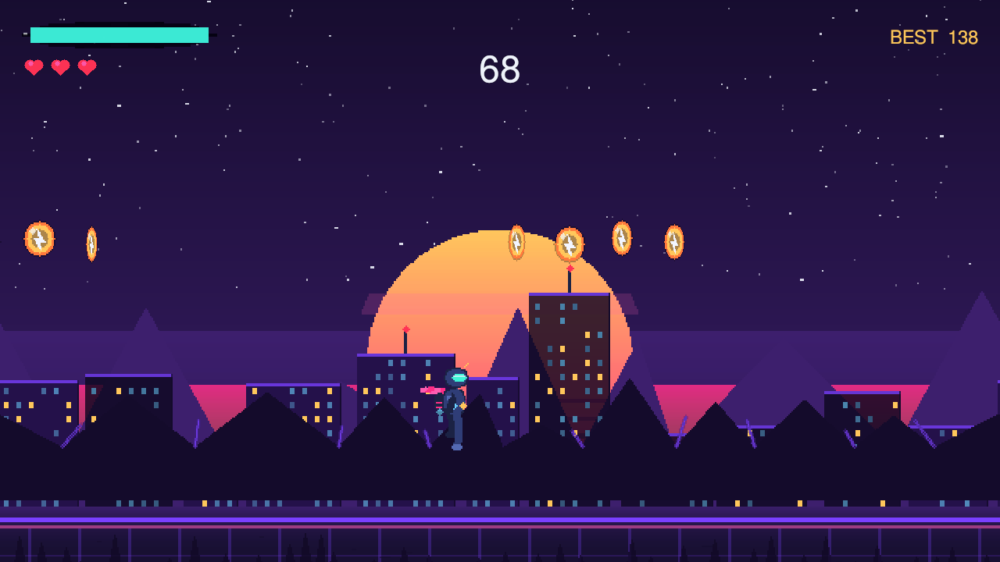
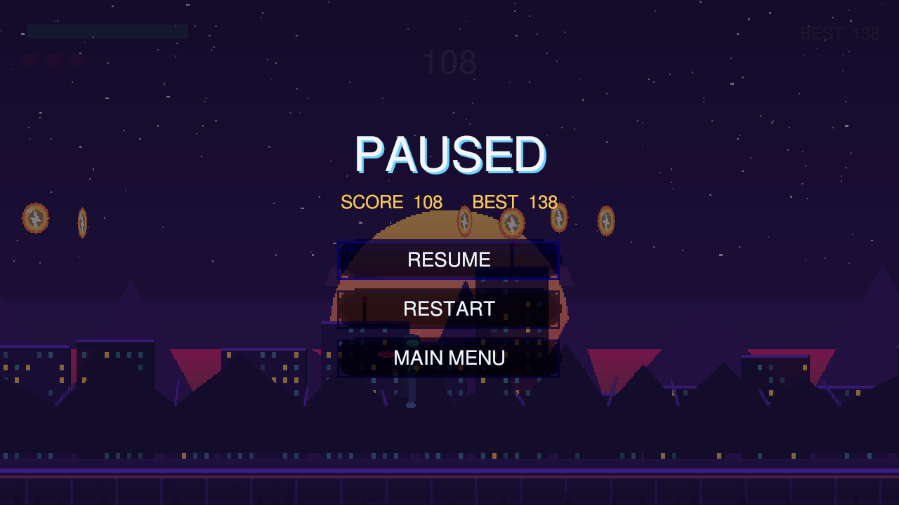
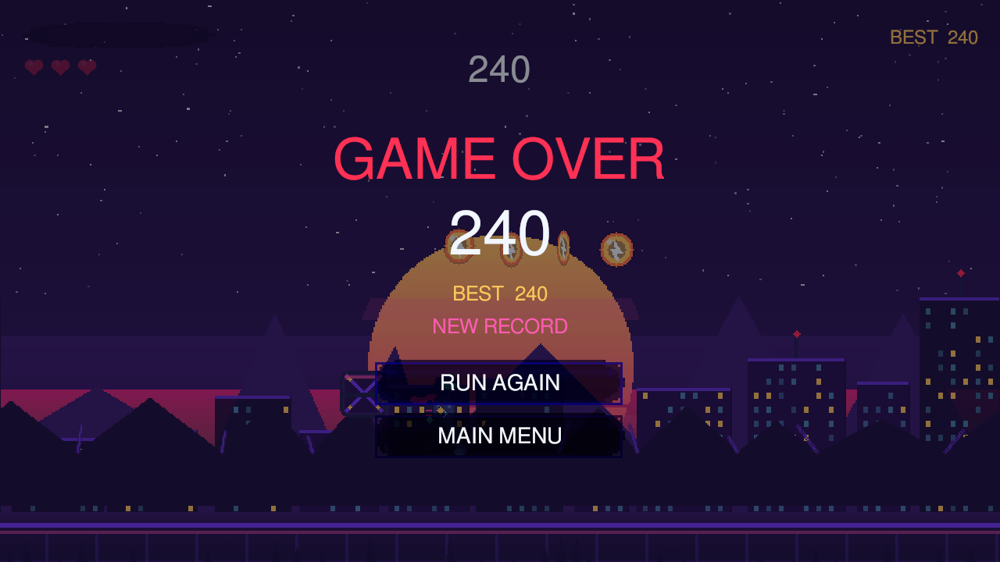

این پروژه یک بازی بیپایان (Endless Runner) دوبعدی با حالوهوای سنتویو است که در آن بهجای حرکت دوربین، لایههای پسزمینه و اشیای جاده جابهجا میشوند. بازیکن یک دوندهٔ سایبرپانک را کنترل میکند که باید از موانع زمینی و هوایی رد شود، سکه جمع کند و تا جایی که سه جان دارد دویده باشد. سرعت جهان با گذشت زمان از ۹ تا ۲۱ واحد در ثانیه بالا میرود، پس بازی بهطور طبیعی سختتر میشود.
همهٔ ورودیها از طریق بستهٔ Input System جدید و تنها از یک مدیر ورودی متمرکز خوانده میشوند؛ هیچ کجای پروژه از کلاس قدیمی Input استفاده نشده است. تمام داراییهای گرافیکی (۳۳ اسپرایت)، شش کلیپ انیمیشن، هشت پریفب و خودِ صحنهٔ بازی هم توسط اسکریپتهای ویرایشگر بهصورت کد تولید میشوند، بنابراین کل پروژه با یک فرمان از صفر بازسازی شدنی است.
| الزام | پیادهسازی | کجا |
|---|---|---|
| پسزمینهٔ بیپایان با پارالاکس | شش الیه با ضریب سرعت مجزا؛ پنج تای آنها روی یک حلقهٔ تایلشونده حرکت میکنند و آسمان ثابت میماند | ParallaxLayer.cs, WorldController.cs |
| ورودی فقط با سیستم جدید و مدیر ورودی | InputActionAsset با دو نقشهٔ Gameplay و UI و یک کلاس مسئول همهٔ اکشنها | GameInputManager.cs |
| سه جان با نوار سلامت | نوار سلامت + سه قلب، پنجرهٔ مصونیت و چشمکزدن بعد از هر برخورد | PlayerHealth.cs, HudController.cs |
| پرش با Space و داش با Shift | پرش با ارتفاع متغیر، کویوتتایم و بافر پرش؛ داش ۰٫۱۶ ثانیهای | PlayerCharacter.cs |
| آسیب دیدن و بازیِ تمام | تماس با مانع آسیب میزند؛ در صفر جان، آهستهشدن زمان و سپس پنل پایان | GameManager.cs |
| طراحی شیءگرا با پایهٔ Interactable | پنج نوع مانع و یک جمعکردنی، همه از یک پایهٔ انتزاعی | بخش ۴ از این گزارش |
| انیمیشن با Animator و حالتها | شش حالت با ترنزیشن Any State برای ضربه، مرگ و داش | Runner.controller |
| منوی اصلی و منوی توقف جدا | دو پنل مستقل با فیدِ زمانِ مقیاسنشده و ناوبری صفحهکلید | MainMenuController.cs, PauseMenuController.cs |
| نمایش امتیاز فعلی و رکورد | عدد بزرگ بالای صفحه + برچسب BEST که همیشه دیده میشود | HudController.cs |
| ذخیرهٔ رکورد با PlayerPrefs | کلیدهای Runner.HighScore و Runner.Runs | ScoreManager.cs |
| امتیاز خلاقانه و افکتها | گرافیک رویهای، ذرات، شبح داش، لرزش دوربین، نور و بازتاب جاده | بخش ۱۰ |
| مسیر | نقش |
|---|---|
| Assets/Scripts/Runtime/Core | ماشین حالت بازی، امتیاز، پالت رنگ، ترتیب رندر و فازها |
| Assets/Scripts/Runtime/Input | مدیر ورودی و رویدادهای سطح بالا |
| Assets/Scripts/Runtime/Player | حرکت، سلامت و رانندهٔ انیمیشن بازیکن |
| Assets/Scripts/Runtime/Interactables | وراث Interactable: موانع و سکه |
| Assets/Scripts/Runtime/World | کنترل جهان، لایههای پارالاکس، تولیدکننده و استخر شیء |
| Assets/Scripts/Runtime/UI | پایهٔ پنلها، HUD و سه منو |
| Assets/Scripts/Runtime/Fx | ذرات، شبح محو شونده، لرزش دوربین |
| Assets/Scripts/Editor | خط تولید دارایی، انیمیشن، پریفب و صحنه |
| Assets/Art | اسپرایتها، کلیپها و کنترلر انیمیشن تولیدشده |
| Build/Linux | خروجی اجرایی لینوکس بازی |
ستون فقرات معماری، یک پایهٔ انتزاعی به نام Interactable است که چرخهٔ عمر مشترک همهٔ اشیای جاده را نگه میدارد: گرفتن SpriteRenderer و Collider، رنگآمیزی هنگام فعالسازی از استخر، و فراخوان OnPickup یا OnHit وقتی بازیکن به آن میرسد. دو شاخهٔ اصلی از همین پایه بیرون میآیند: Obstacle که آسیب میزند و Collectible که پاداش میدهد.
نمودار وارثی: پیکانها به سمت کلاس پایه میروند. کلاسهای تیره انتزاعیاند.
| شیء | کلاس | جان | آسیب | رفتار |
|---|---|---|---|---|
| میخ فلزی | GroundObstacle | زمینی | ۱ | روی آسفالت میخوابد و باید رویش پرید |
| جعبه | GroundObstacle | زمینی | ۱ | کندتر از مانع دیگر اما پهنتر |
| ارهٔ برقی | GroundSaw | زمینی | ۲ | میچرخد و دو جان میگیرد |
| پهپاد | AirObstacle | هوایی | ۱ | در ارتفاعی میایستد که با دویدن عادی به آن میخوری |
| مین معلق | AirObstacle | هوایی | ۲ | بالا و پایین میرود و باید از زیرش رد شد |
| سکه | Coin | جمعکردنی | ۲۵+ امتیاز | با نرخ ۱٫۳۵ بار در ثانیه میچرخد و بالا و پایین میکند |
تنها نقطهٔ تماس بازی با سختافزار ورودی، کلاس GameInputManager است. این کلاس فایل اکشنها را در زمان اجرا باز میکند، نقشهٔ Gameplay را فقط وقتی بازی در حال اجراست فعال میکند و نقشهٔ UI را به InputSystemUIInputModule میسپارد تا منوها هم با صفحهکلید کار کنند. بقیهٔ اسکریپتها هیچوقت کنترلر را نمیخوانند؛ بلکه به رویدادهای سطحبالا مشترک میشوند: JumpPressed، DashPressed، PausePressed و RestartPressed.
| اکشن | میانبرها | نوع تریگر |
|---|---|---|
| Move | کلیدهای A / D و فلش چپ و راست | ترکیب محور یکبعدی 1DAxis |
| Jump | Space، W، فلش بالا، buttonSouth | شروع و پایان برای پرش با ارتفاع متغیر |
| Dash | Shift، E، buttonWest، ماشپ چپ | فشار کامل |
| Pause | Esc، P، start | فشار کامل |
| Restart | R، select | فشار کامل |
WorldController تنها منبع «سرعت جهان» است: از ۹ شروع میکند، ثانیهای ۰٫۱۸ واحد اضافه میکند و در ۲۱ سقف دارد. هر لایهٔ پارالاکس این سرعت را در ضریب خودش ضرب میکند، پس فاصلهها هرگز با سرعت بازی عوض نمیشوند و خط افق تقریباً ثابت میماند.
| لایه | ضریب سرعت | نقش |
|---|---|---|
| آسمان و خورشید خطخطی | ۰ (ثابت) | نقطهٔ ثابت نگاه در افق |
| کوههای دوردست | ۰٫۱۲ | عمق بیش از دور |
| شهر نئونی | ۰٫۳۰ | پسزمینهٔ میانی |
| یال صخرهها | ۰٫۵۵ | مرز زمین |
| جاده و شبکهٔ بنفش | ۱٫۰۰ | لایهٔ مرجع بازی |
| مخروطهای پیشزمینه | ۱٫۳۵ | سرعت را به چشم نشان میدهد |
هر لایه از دو تایل کنار هم ساخته شده و وقتی یک تایل کامل از صفحه بیرون رفت، به ابتدای صف برمیگردد؛ این همان حلقهٔ بیپایان است. RunnerSpawner اما بهجای زمان، بر پایهٔ «مسافت» تصمیم میگیرد: ۱۴ واحد اول را پاک میگذارد تا بازیکن نفس بکشد، و از آن به بعد فاصلهٔ بین موانع را با فرمول «حداقل ۳٫۴ بهعلاوه ۰٫۴۲ به ازای هر واحد سرعت» میچیند، پس هرچه سریعتر شوی، جاده شلوغتر میشود ولی هیچوقت غیرمنصفانه نمیشود. ۳۸ درصد وقتها یک ردیف سکه روی جاده مینشیند و بعد از هر مانع با احتمال ۵۰ درصد یک سکه پاداش میآید.
هیچ شیئی در حین بازی ساخته یا نابود نمیشود: ObjectPool همهٔ موانع، سکهها و افکتها را از ابتدا نمونهبرداری میکند و با کلید SetActive و ریستِ فیزیک دوباره به صف برمیگرداند.
کامپوننت Animator روی بازیکن با یک AnimatorController کار میکند که شش حالت دارد: دویدن (پیشفرض، شش فریم)، پرش، فرود/سقوط، داش، ضربه و مرگ. ورود به حالتهای ضربه، مرگ و داش از مسیر Any State و با پارامتر Trigger انجام میشود تا در هر لحظهای از بازی قابل وقوع باشند؛ خروجها اما شرطیاند و به پارامتر Grounded نگاه میکنند تا دونده تا روی زمین نیامده به حالت دویدن برنگردد. پارامتر Speed سرعت پخش کلیپ دویدن را با سرعت جهان هماهنگ میکند، پس پاها هرگز روی آسفالت لیز نمیخورند.
| پارامتر | نوع | فرستنده |
|---|---|---|
| Grounded | Bool | PlayerAnimationDriver از بدنهٔ فیزیکی بازیکن |
| Rising | Bool | علامت مثبت سرعت عمودی |
| Speed | Float | سرعت جهان برای تنظیم نرخ گام |
| Jump / Dash / Hit / Death | Trigger | به ترتیب از ورودی، داش، آسیب و مرگ |
بازخورد دیداری برخورد دو لایه دارد: کلیپ حالت «ضربه» که حالت بدن را عوض میکند، و همزمان رنگ اسپرایت به قرمز آسیب میرود و تا پایان پنجرهٔ مصونیت چشمک میزند.
هر سه پنل از یک پایهٔ مشترک به نام MenuPanel میآیند که کارش فقط دو چیز است: نمایش و پنهانسازی با محوِ مبتنی بر زمان مقیاسنشده (تا وقتی بازی در توقف است هم انیمیشن پنل کار کند) و تصمیم دربارهٔ اینکه دکمهها کلیکپذیر باشند. پنل هرگز غیرفعال نمیشود، چون غیرفعال شدن اشتراک رویداد فاز را میشکند و پنل دیگر بالا نمیآمد.
امتیاز از دو چیز ساخته میشود: مسافت (هر واحد جهان ۲ امتیاز) و سکهها (هر کدام ۲۵ امتیاز). در پایان هر دور، اگر عدد از رکورد بهتر باشد در PlayerPrefs نوشته و بلافاصله روی دیسک ذخیره میشود؛ شمارندهٔ دورها هم در همان فایل نگه داشته میشود. در تصاویر بخش بعد، رکورد ۱۳۸ امتیاز از اجرای پیشین خوانده میشود که ماندگاری بین دو اجرا را ثابت میکند.
بهجای کشیدن دستی اسپرایتها و چیدن دستی صحنه، همهچیز با اسکریپتهای ویرایشگر ساخته میشود. نتیجه این است که صحنهٔ بازی، پریفبها و داراییها همگی بازپذیرند و هیچ تنظیمی گم نمیشود.
| مرحله | کاری که میکند | خروجی |
|---|---|---|
| PixelCanvas و SpriteWriter | کشیدن پیکسلبهپیکسل روی شبکه، نوشتن PNG و تنظیم TextureImporter روی پیکسلآرت خالص | ۳۳ اسپرایت در Assets/Art/Sprites |
| RunnerAnimations | ساخت کلیپها، منحنیهای تعویض اسپرایت و گراف حالت با ترنزیشنها | ۶ کلیپ و Runner.controller |
| RunnerPrefabs | ساخت موانع، سکه و افکتها با کالایدر و پارامترهای تراز شده | ۸ پریفب |
| RunnerSceneBuilder | ساخت سیستمها، جهان، لایههای پارالاکس، HUD و سه پنل و سپس سیمکشی ارجاعها | Assets/Scenes/Game.unity |
| RunnerBuild | تنظیمات پروژه و ساخت اجرای لینوکس از منوی Runner یا حالت دستهجمعی | Build/Linux/NeonRunner |
| Wire | کمککنندهٔ بازتابی برای وصل کردن فیلدهای خصوصی SerializeField بدون دستیکاری در اینسپکتور | ارجاعهای درست در صحنه |
اجرای کل خط تولید از منوی Runner > Setup Project ممکن است؛ همان مراحل بهصورت فرمان خطی هم برای -batchmode در دسترساند.
دو راه وجود دارد. راه اول، اجرای فایل آماده است: در لینوکس کافی است فایل Build/Linux/NeonRunner را اجرایی کنی و باز کنی. راه دوم از خود یونیتی است: پوشهٔ پروژه را با Unity 6000.6.3f1 باز کن، صحنهٔ Assets/Scenes/Game.unity را باز و پخش کن.
| کلید | کارکرد |
|---|---|
| Space | پرش؛ نگهداشتن یعنی پرش بلندتر |
| Shift | داش سریع به جلو |
| A / D | تغییر موقعیت افقی روی جاده |
| Esc یا P | توقف و منوی توقف |
| R | شروع دوبارهٔ دور |
| جهتنما + Enter | حرکت بین دکمههای منوها |
بازی چند بار بهصورت خودکار و با ورودی ساختگی اجرا شد تا همهٔ حالتها ثبت شود. در آخرین اجرا دونده ۲۴۰ امتیاز گرفت؛ پرش با کلید فاصله در همان اجرا ۳٫۲ واحد از زمین اوج گرفت، با هر برخورد یکی از سه جانش کم شد و در صفر جان پنل پایان باز شد. در میانهٔ همان دور و در حالت توقف امتیاز ۱۰۸ ثبت شده است. رکورد پیشین ۱۳۸ امتیاز از اجرای قبل در PlayerPrefs خوانده شد و چون امتیاز تازه بیشتر بود، همان لحظه جای خود را به ۲۴۰ داد؛ در تصویر منوی اصلی همان ۱۳۸ دیده میشود و در تصویر پایان، عدد ۲۴۰. این دو عدد کنار هم هم ماندگاری رکورد و هم بهروزرسانی آن را ثابت میکنند. نوار سلامت، سه قلب، منوی توقف و منوی پایان همه در تصاویر بخش بعد دیده میشوند.






